Menu barbok'you

Quêtes Bontariennes (1 à 10)
Devenir néophyte
| 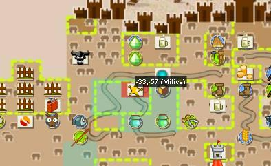 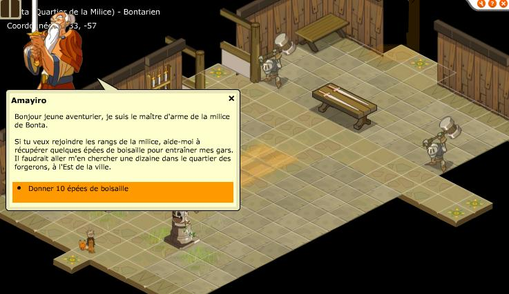 |
|---|
Tout se passe dans la milice de Bonta située en -33/-57. Pour devenir ange il faudra ramener à Amayiro 10 Epées de Boisaille (facilement achetable à l'HDV forgeron) |
Alignement +1
| 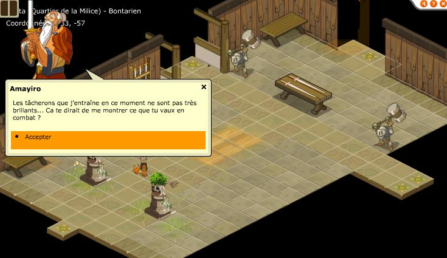 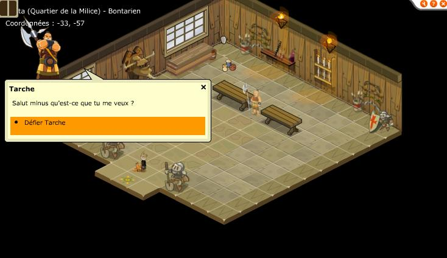 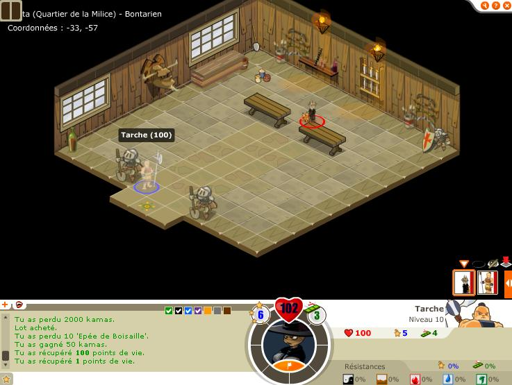 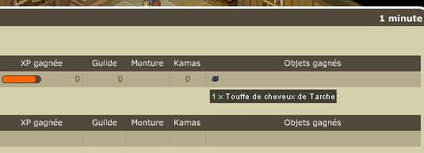 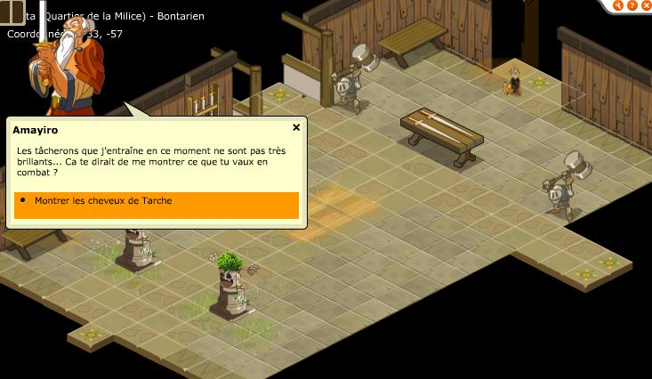 |
|---|
Il va vous falloir combattre Tarche, il se trouve juste la map vers le haut dans la milice et n'est pas trés fort. Vous obtenez en objet de quete une touffe de cheveux, ramener là à Amayiro |
Alignement +2
| 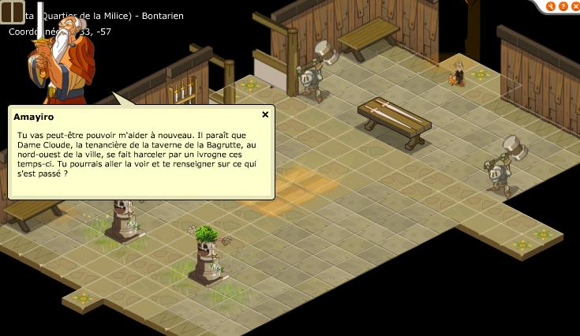 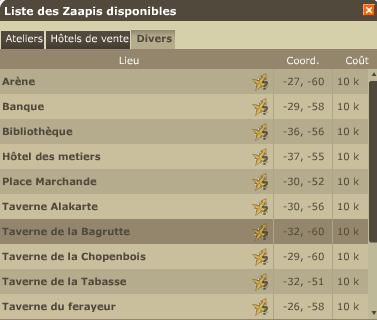 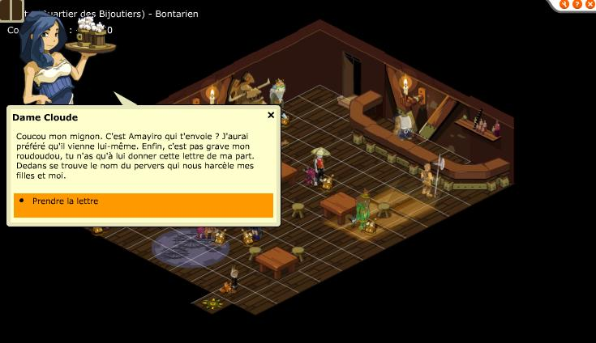 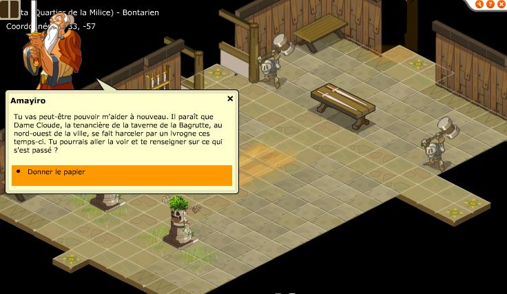 |
|---|
Allez dans la taverne en -32/60, parlez à la jeune femme puis retournez à la milice. |
Alignement +3
Allez acheter 20 pains au blé complet puis ramenez les à Amayiro, il vous donnera 2000 kamas en échange. |
|---|
Alignement +4
| 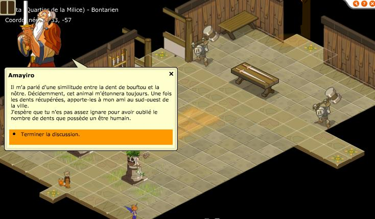 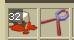 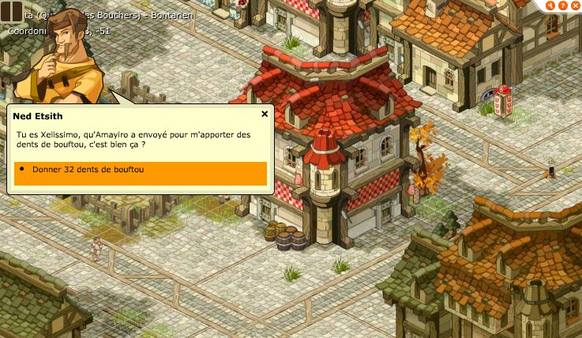 |
|---|
Il faut aller tuer autant de bouftous que vous avez de dents (32 donc si vous avez pas manger trop de bonbons), les dents sont en objets de quetes, 1 bouftou tué = 1 dent, attention il faut le nombre pile de dents !! |
Alignement +5
| 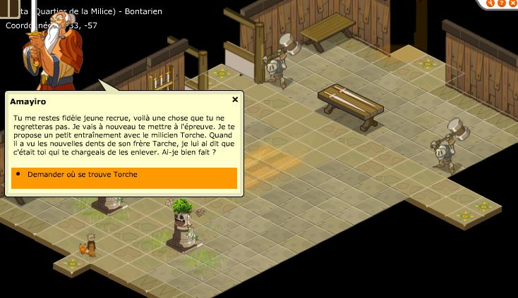 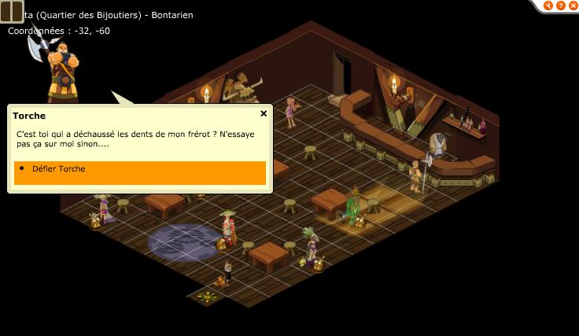 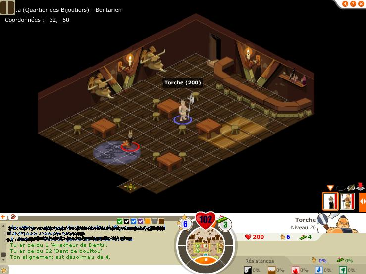 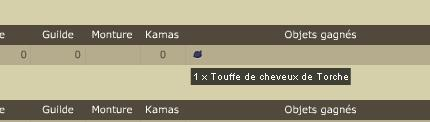 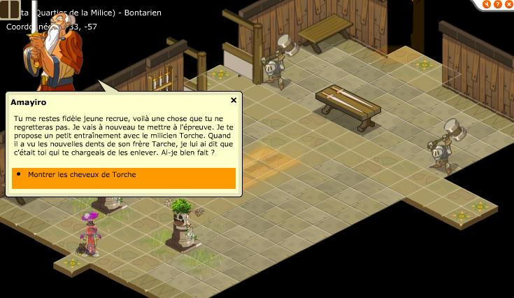 |
|---|
On vous demande d'affronter Torche dans la taverne en -32/-60, ramenez ensuite sa touffe de cheveux à la milice. |
Alignement +6
| 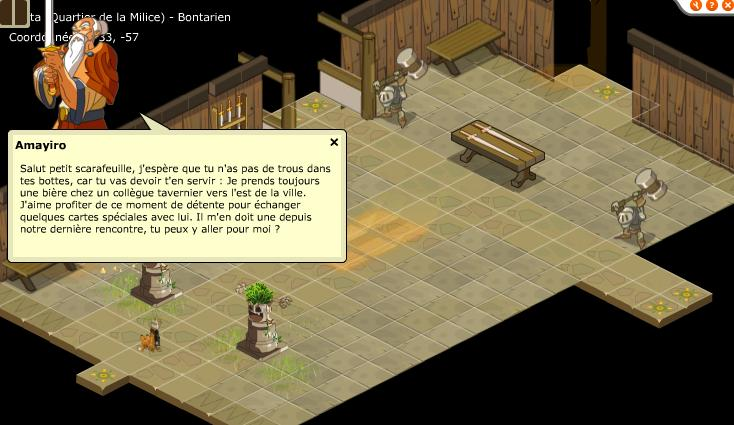 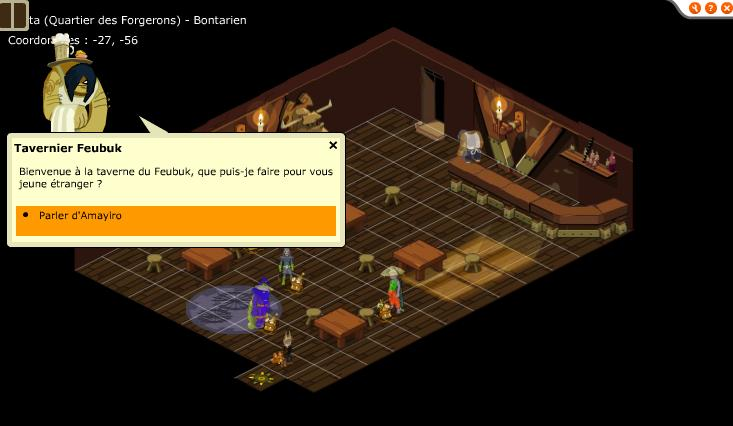 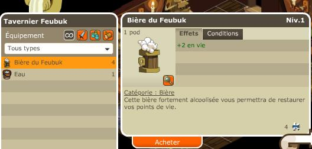 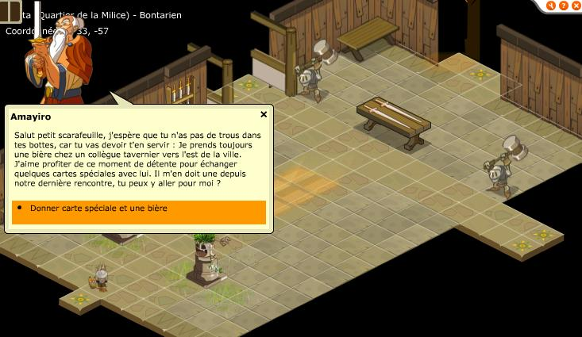 |
|---|
Allez à la taverne en -27/-56, récuperez la carte et achetez une biere puis amener ca à Amayiro. |
Alignement +7
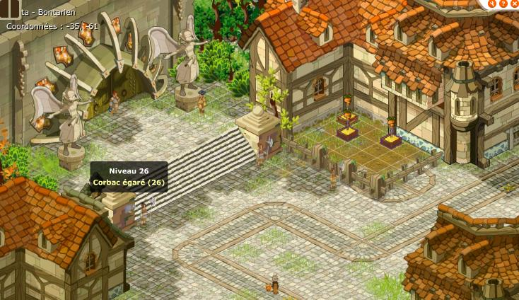 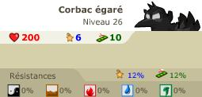 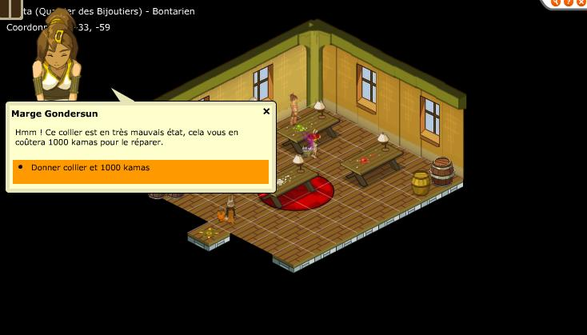 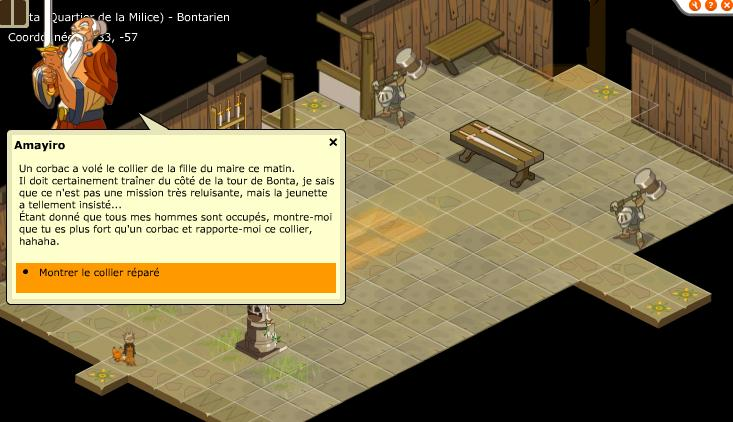 |
|---|
Il faut attendre le respawm d'un corbac en -35/-61, le battre puis se diriger avec le collier cassé en -33/-59, contre 1000 kama le PNJ vous le repare et vous pouvez retourner à la milice. |
Alignement +8
| 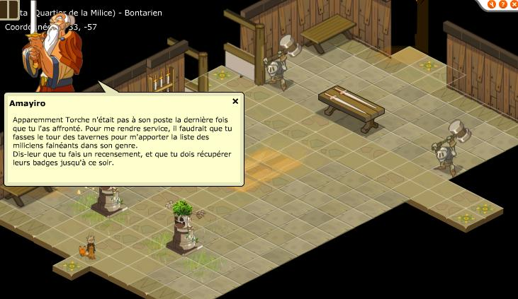 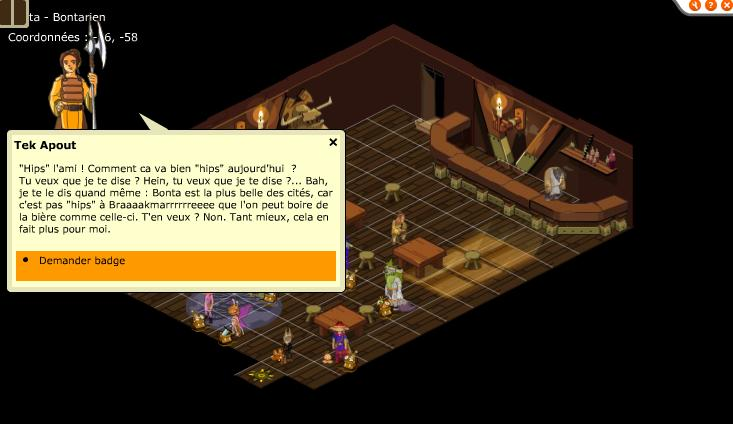 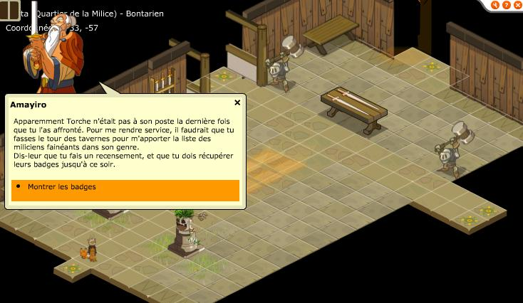 |
|---|
Allez récuperer des badges auprés des miliciens dans les tavernes en : -26/-58, -32/-51 et -27/-50. |
Alignement +9
| 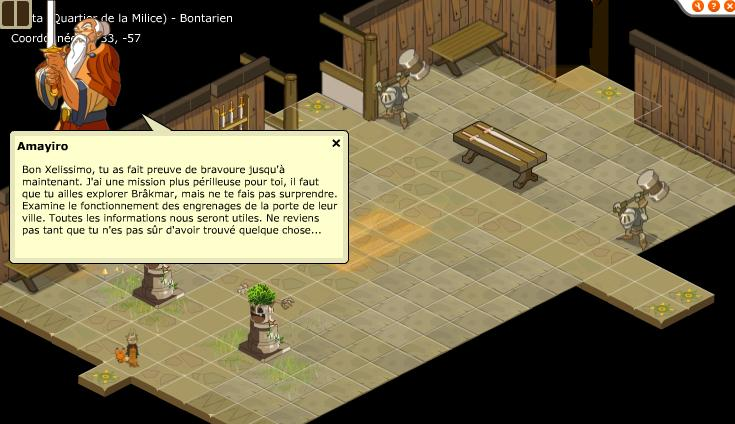 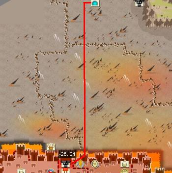 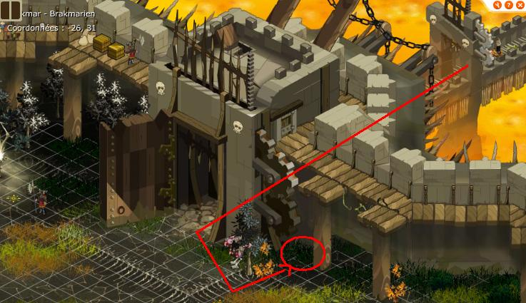 |
|---|
Il faut aller à Brakmar, attention les gardes aggressent et sont plutot trés fort. Il faut aller à la map juste aprés le pont de Brakmar puis se rendre à gauche du pilier en bas, laissez les messages verts, si vous etes au bon endroit cela vous indiquera votre passage alignement 9 ange. |
Alignement +10
| 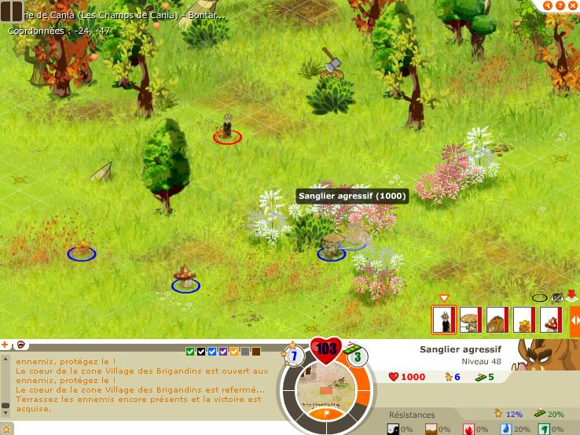 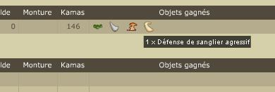 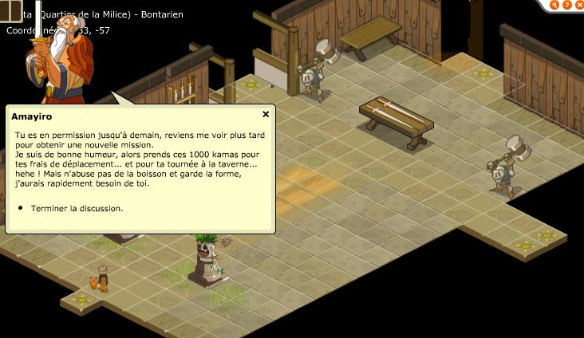 |
|---|
Vous devez tuer un sanglier aggressif qui réapparait aléatoirement dans tout les champs de cania, il faut donc chercher un peu, attetion il a quand meme 1000 PDV. Retournez voir Amayiro, il vous donne 1000 kamas et une permission de 24h, pour la suite des quetes il faut donc revenir le lendemain. |
Alignement +10 (suite)
| 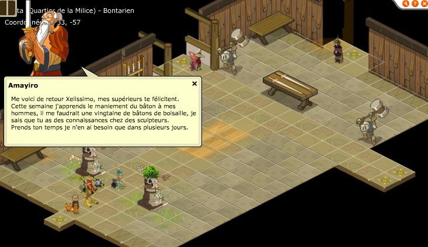 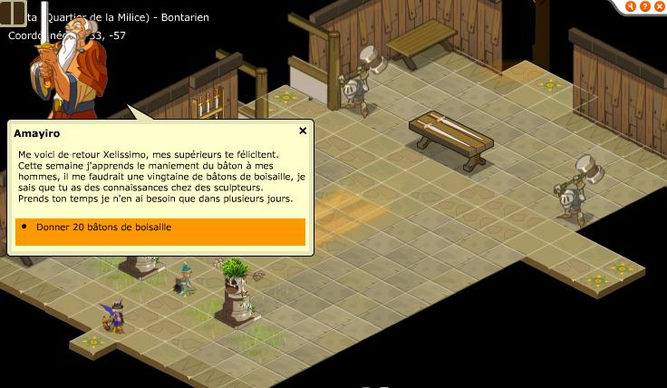 |
|---|
Ramenez lui 20 bâtons de boisaille (2 frenes + 3 chataigniers le craft) |
Dofus est un MMORPG édité par Ankama." Barbok " est un site non-officiel sans aucun lien avec Ankama.
Toutes les illustrations sont la propriété d'Ankama Studio et de Dofus. Le contenu de ce site a été rédigé initialement par Immortal, il ne s'agit que d'une remise en ligne effectuée par Eternal Games.